Recorrido funcional de la aplicación móvil ciudadana y el panel web municipal
H. Ayuntamiento de Mexticacán, Jalisco
Edición · 15 de octubre de 2026
Propósito. Explicar qué hace cada pantalla, cómo avanzar por los flujos principales y quién puede usar cada acción.
Las imágenes del panel web son capturas de la aplicación. Las pantallas móviles son recreaciones ilustrativas, no capturas en vivo.
SGI Mexticacán · Guía funcional15 octubre 2026
Mapa general
Qué hace la aplicación
SGI recibe reportes con categoría, descripción, fotografías y ubicación; los canaliza a las áreas municipales; permite asignar y atenderlos; y conserva comentarios, evidencias e historial para dar seguimiento.
Flujo completo: registrar/iniciar sesión → enviar reporte → recibir folio → revisar y asignar → atender y documentar → actualizar estatus → consultar seguimiento o cerrar.
Panel web: supervisar, gestionar reportes y cuentas.
Todas las áreas.
Recepcionista
Panel web: revisar, clasificar, asignar, priorizar y canalizar.
Todas las áreas.
Encargado de Área
Panel web: coordinar reportes y personal del área.
Su área.
Operativo
Panel web: trabajar asignaciones, comentar, registrar evidencia y avance.
Solo los que tiene asignados.
App móvil Acceso, alta ciudadana, Mis reportes, nuevo reporte y detalle/seguimiento.
Panel web Dashboard, incidencias, detalle de atención, mapa, notificaciones y administración de usuarios (solo Administrador).
Importante: no hay botón para crear incidencias en el panel web. Si personal municipal registra desde la app, el sistema identifica como reportante a la cuenta que inició sesión.
SGI Mexticacán · Guía funcionalAlcance y perfiles
App móvil · Acceso
Iniciar sesión y crear cuenta
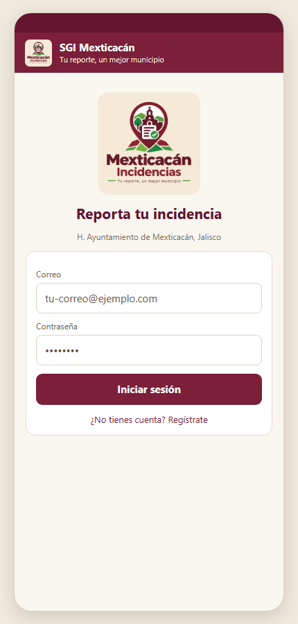
Login móvil ilustrativo. Los datos visibles en la imagen son de ejemplo.
Elemento
Qué hace
Correo / Contraseña
Captura las credenciales de una cuenta activa. Enviar con el teclado o tocar el botón de acceso.
Iniciar sesión
Valida las credenciales; al entrar abre Mis reportes. Si falla, muestra un aviso con el motivo.
¿No tienes cuenta? Regístrate
Abre el formulario para crear una cuenta de Ciudadano.
Crear cuenta
Solicita nombre, apellidos opcionales, teléfono opcional, correo, contraseña y confirmación. La contraseña debe tener al menos 8 caracteres.
En registro, llena los campos obligatorios (nombre, correo y contraseña) y confirma la contraseña.
Toca Crear cuenta. Si el correo ya existe o faltan datos, se muestra el error y se conserva el formulario.
Al completar el registro, la sesión queda iniciada y se abre Mis reportes.
El registro público crea cuentas de Ciudadano; las cuentas municipales se administran desde Usuarios en el panel web.
SGI Mexticacán · Guía funcionalApp: acceso
App móvil · Mis reportes
Consultar reportes y comenzar uno nuevo
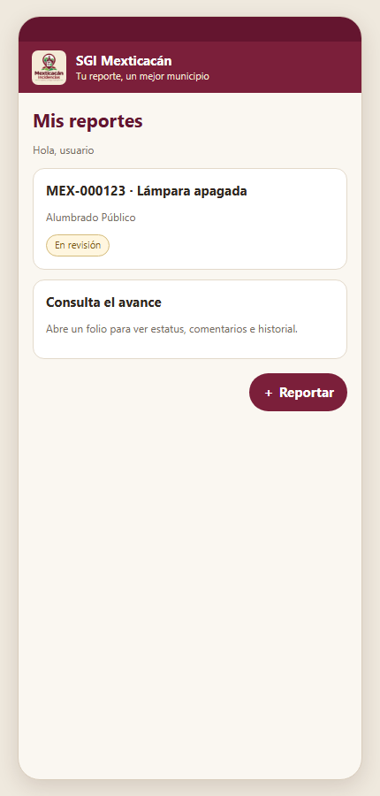
Lista móvil ilustrativa. El botón principal para comenzar es “＋ Reportar”.
Elemento
Qué hace
Tarjeta de reporte
Muestra folio, título, área, estatus, fecha y miniatura cuando existe. Tócala para abrir el detalle.
Deslizar para actualizar
Vuelve a consultar la lista y refleja cambios recientes.
＋ Reportar
Abre el formulario de nuevo reporte.
Salir
Cierra la sesión de la cuenta en el teléfono.
Al abrir la app con sesión activa se muestra el saludo y la lista de hasta 50 reportes propios.
Si aún no hay reportes, aparece el mensaje de lista vacía; toca ＋ Reportar para empezar.
Los cambios de estatus pueden aparecer en tiempo real. Si no aparecen, desliza la lista hacia abajo para actualizar.
Selecciona una tarjeta para ver fotografías, ubicación, comentarios e historial.
La ciudadanía no puede consultar reportes de otras cuentas, editar o borrar un reporte ya enviado, ni asignar personal.
SGI Mexticacán · Guía funcionalApp: lista
App móvil · Nuevo reporte
Elegir área, categoría y describir
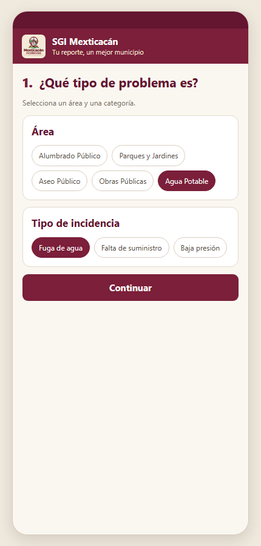
Selección de área y tipo de incidencia.
Área: toca una de las cinco áreas: Alumbrado Público, Parques y Jardines, Aseo Público, Obras Públicas o Agua Potable.
Tipo de incidencia: al elegir área, aparecen sus categorías. Toca la que corresponda. Cambiar el área reinicia la selección de categoría.
Título: escribe una frase concreta (máximo 150 caracteres). Al elegir una categoría puede sugerirse su nombre como título si el campo aún está vacío.
Descripción: explica qué ocurre, desde cuándo y referencias útiles para localizar el problema.
Área
Ejemplos de categorías
Alumbrado Público
Luminaria apagada o intermitente, poste dañado, cables expuestos.
Parques y Jardines
Área verde en mal estado, mobiliario dañado, falta de riego, poda.
Aseo Público
Basura en vía pública, lote baldío con basura, falta de recolección.
Obras Públicas
Bache, banqueta dañada, señalización, drenaje obstruido o colapsado.
Agua Potable
Fuga, falta de suministro, baja presión, calidad o tubería dañada.
Escribe información clara y necesaria; evita incluir datos personales de terceros que no sean pertinentes.
SGI Mexticacán · Guía funcionalApp: clasificación
App móvil · Evidencia y ubicación
Adjuntar fotos y localizar el problema
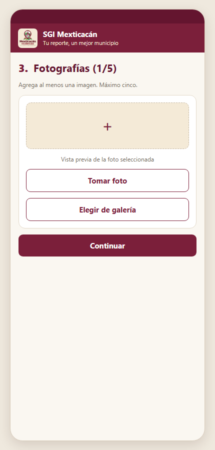
Paso de fotografías; admite hasta 5.
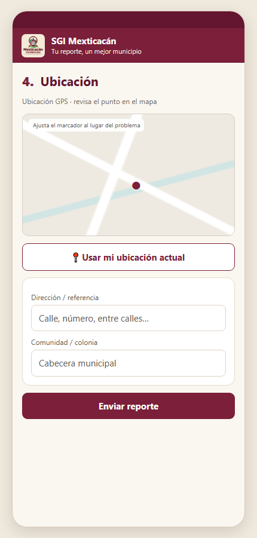
Mapa y referencia del sitio.
Botón / campo
Acción
Tomar foto
Solicita permiso de cámara y abre la cámara del teléfono.
Galería
Solicita permiso de fotos y permite elegir imágenes existentes.
✕ sobre miniatura
Quita esa imagen antes de enviar. Máximo total: 5.
Usar mi ubicación actual
Vuelve a solicitar la ubicación GPS y centra el mapa en ella.
Mapa
Toca el lugar del incidente para ajustar el marcador manualmente. Al hacerlo deja de seguir automáticamente el GPS.
Dirección / referencia, Comunidad / colonia
Se completan si el teléfono puede reconocer el lugar; pueden corregirse o escribirse manualmente.
Permite acceso a cámara/galería según el método que usarás y adjunta al menos una fotografía clara.
Permite ubicación al usar GPS. Si no otorgas el permiso, marca el sitio tocando el mapa.
Verifica que el marcador señale el punto correcto y revisa dirección/comunidad antes de enviar.
Si el GPS sigue activo, su posición puede actualizarse mientras llenas el formulario; después de ajustar el mapa manualmente ya no mueve el punto.
Para enviar se requiere: categoría, título, descripción, al menos una imagen y coordenadas válidas. Sin alguno, la app explica qué falta.
SGI Mexticacán · Guía funcionalApp: fotos y ubicación
App móvil · Envío y seguimiento
Enviar reporte y consultar su detalle
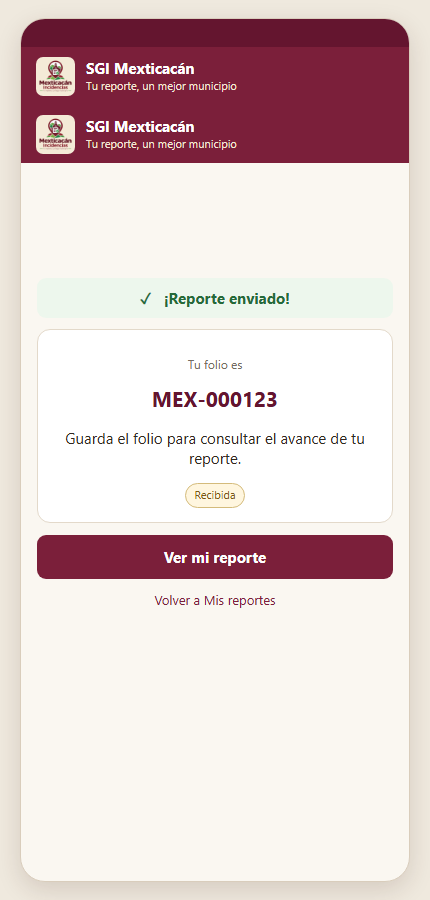
Confirmación con folio generado por el sistema.
Toca Enviar reporte. Mientras se procesa, el botón indica carga y no debe tocarse repetidamente.
Si se envía correctamente, aparece el folio (por ejemplo MEX-000123) y se abre el detalle del reporte. Conserva el folio para consultas.
Si falla, aparece un aviso. Revisa conexión, campos obligatorios, permisos y tamaño/formato de las imágenes; corrige y vuelve a intentar.
Dentro del detalle
Estatus y progreso: muestra el estado actual y el avance Recibida → En revisión → Asignada → En proceso → Resuelta. Cerrada completa visualmente la secuencia; Rechazada se identifica con un aviso y se deben revisar comentarios.
Fotografías: toca una imagen para ampliarla; la vista ampliada se cierra tocando fuera.
Ubicación: revisa el mapa y toca Abrir en Google Maps para abrir las coordenadas en la app/navegador disponible.
Seguimiento: consulta eventos del historial y fechas.
Comentarios: escribe una pregunta o información adicional y toca Enviar comentario. El municipio puede responder; los comentarios internos no se muestran a ciudadanía.
El detalle se actualiza cuando llega un cambio de estatus o comentario. Para un comentario, usa información relevante para atender el folio; no abras reportes duplicados por una demora de actualización.
SGI Mexticacán · Guía funcionalApp: detalle
Panel web · Dashboard
Resumen municipal de actividad
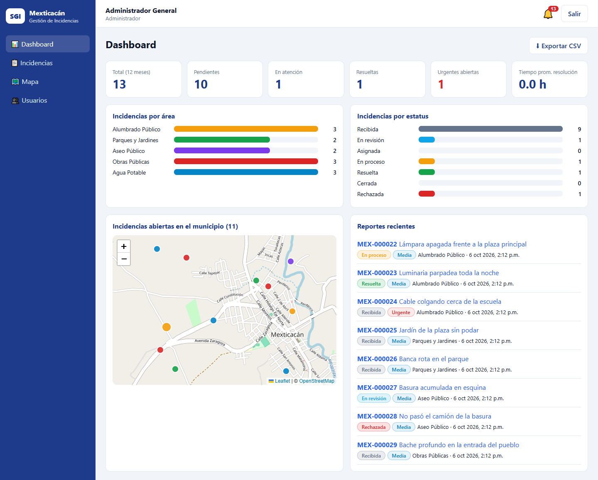
Captura del panel municipal. Los datos de la imagen son de demostración.
Elemento
Qué muestra o hace
Total (12 meses)
Incidencias del periodo mostrado por el indicador.
Pendientes / En atención / Resueltas
Conteos por etapa de atención.
Urgentes abiertas
Reportes urgentes que siguen sin estatus final.
Tiempo promedio
Horas promedio para resolver; si no hay dato se muestra “—”.
Gráficas
Distribución por área y estatus.
Mapa / Reportes recientes
Ubicación de incidencias abiertas y lista de reportes recientes; toca un folio para abrir su detalle.
Exportar CSV
Descarga un archivo incidencias.csv que se puede abrir con Excel. El archivo puede incluir ubicación y dirección; resguárdalo conforme a las reglas municipales.
El Dashboard se actualiza cuando se crea o modifica una incidencia. Administrador, Recepcionista y Encargado acceden a reportes según su alcance; los datos del Encargado se limitan a su área. El Operativo no tiene acceso al resumen estadístico.
SGI Mexticacán · Guía funcionalWeb: dashboard
Panel web · Incidencias
Buscar, filtrar y abrir un folio
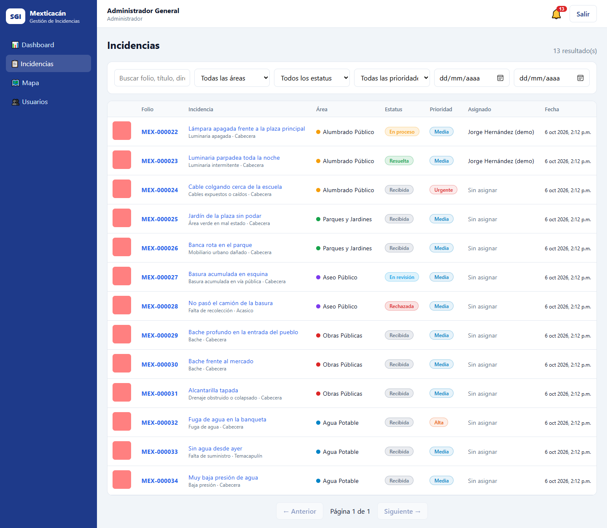
Lista municipal con criterios de búsqueda y filtros.
Control
Uso
Buscar folio, título, dirección…
Filtra por texto del folio, título, dirección o comunidad.
Área / Estatus / Prioridad
Selecciona un valor para acotar los resultados; la opción “Todas/todos” quita ese filtro.
Desde / Hasta
Limita por fecha de creación. Puedes usar solo un extremo o ambos.
Folio o título
Abre el detalle para revisar información y, según rol, atender el caso.
Anterior / Siguiente
Navega páginas de 15 resultados. Los filtros reinician la paginación a la primera página.
La tabla también muestra miniatura, categoría, comunidad, área, estatus, prioridad, asignado y fecha.
“Sin asignar” identifica folios que todavía no tienen responsable.
Los avisos de nuevos reportes llegan en tiempo real; toca el aviso para volver a consultar la lista. Las actualizaciones existentes se reflejan en sus filas.
Un mensaje de lista vacía significa que no hay resultados con esos filtros o dentro del alcance de tu perfil. Quita filtros o confirma los permisos antes de reportar un error.
Alcance: Ciudadano ve los propios en la app; Operativo los asignados a su usuario; Encargado los de su área; Administrador y Recepcionista todas las áreas.
SGI Mexticacán · Guía funcionalWeb: lista
Panel web · Detalle y atención
Leer un reporte y registrar acciones
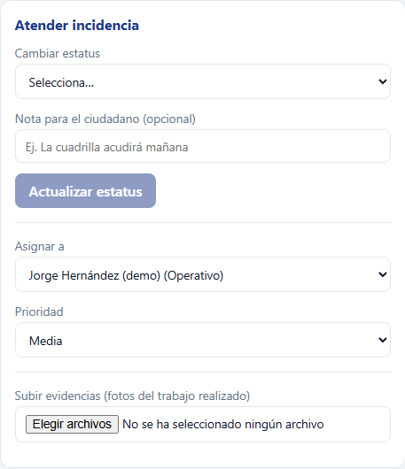
Panel de atención. La disponibilidad de acciones depende del perfil.
Información del caso
Descripción, reportante, fecha, dirección/comunidad y coordenadas.
Abrir en Google Maps abre la ubicación externa.
Fotografías del reporte y evidencias: toca una para ampliarla.
Mapa puntual e historial de cambios, asignaciones, prioridades y evidencias.
Acciones de atención
Cambiar estatus y nota opcional para el ciudadano; pulsa Actualizar estatus para guardar.
Asignar a: selección de personal; al elegir se guarda el cambio.
Prioridad: Baja, Media, Alta o Urgente; al elegir se guarda.
Subir evidencias: selecciona fotos del trabajo (hasta 5).
Permisos: todos los perfiles municipales pueden cambiar estatus en los reportes que pueden consultar. Operativo solo puede marcar En proceso o Resuelta. Administrador, Recepcionista y Encargado de Área pueden asignar personal y cambiar prioridad.
La asignación y prioridad se guardan al seleccionar el valor. Confirma el nombre/valor elegido y espera a que termine la operación antes de repetirla.
SGI Mexticacán · Guía funcionalWeb: detalle
Panel web · Comentarios y mapa
Comunicación, mapa y notificaciones
Comentarios dentro del folio
Lee el hilo antes de responder para evitar duplicar instrucciones.
Escribe el texto y pulsa Enviar.
El personal puede activar Comentario interno (no lo ve el ciudadano) para notas de coordinación municipal. Desactívalo para una respuesta pública.
Ciudadanía ve solo comentarios públicos; los comentarios nuevos actualizan el detalle en tiempo real.
Pantalla Mapa
Área: muestra todas o solo una de las áreas.
Color por área / estatus: cambia el significado del color de los puntos y de la leyenda.
Solo abiertas: activado por defecto; desactívalo para incluir estatus finales.
Toca un marcador para ver folio, área, título y estatus; Ver detalle abre el folio. Marcadores urgentes se dibujan más grandes.
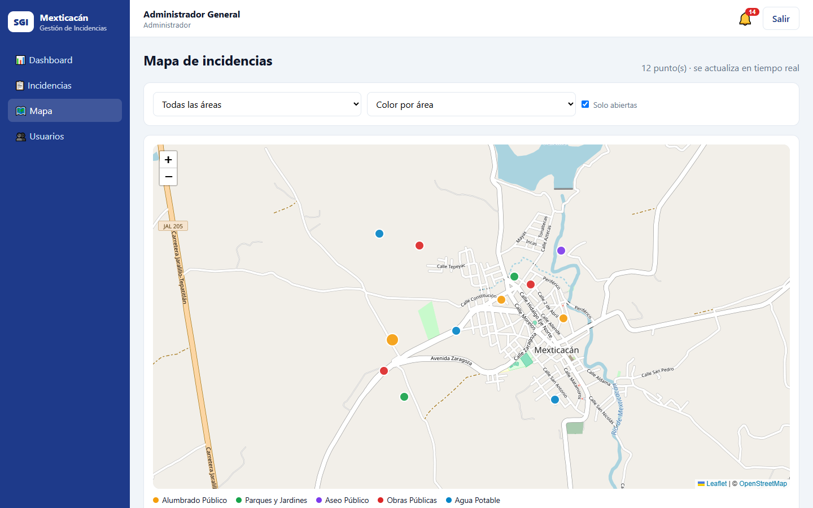
Mapa web; se actualiza cuando se crea o modifica una incidencia.
Campana de notificaciones
La campana del encabezado muestra el contador de pendientes. Tócala para abrir; selecciona una notificación para marcarla como leída y abrir el folio asociado. Marcar todas como leídas limpia el contador. Notificaciones se reciben por asignación, cambios y comentarios públicos pertinentes.
SGI Mexticacán · Guía funcionalWeb: seguimiento
Panel web · Usuarios y salida
Administración de cuentas (Administrador)
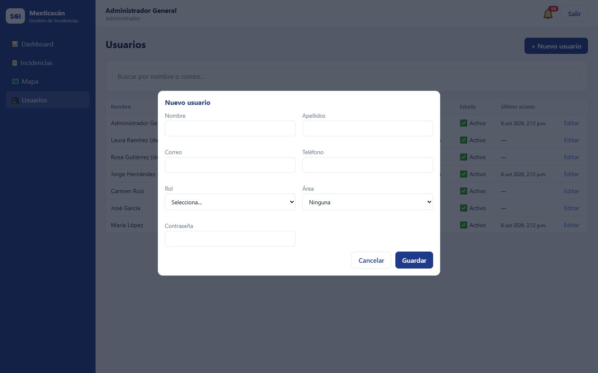
Formulario de alta/edición de una cuenta municipal.
Botón / control
Qué hace
Usuarios
Abre la administración, visible solo para Administrador.
Buscar por nombre o correo
Filtra la tabla de usuarios.
＋ Nuevo usuario
Abre formulario para nombre, apellidos, correo, teléfono, rol, área y contraseña. Correo y contraseña son obligatorios; contraseña mínima: 8 caracteres.
Editar
Permite actualizar datos, rol/área, contraseña opcional o estado activo. El correo de una cuenta existente no se puede cambiar desde esta pantalla.
Guardar / Cancelar
Guarda cambios o cierra el formulario sin guardar.
Área es obligatoria para Encargado de Área y Operativo. Para otros perfiles puede quedar en “Ninguna”. No hay botón de borrar; desactiva una cuenta con Cuenta activa cuando deba perder acceso.
Salir de la aplicación
En el encabezado web o en Mis reportes móvil, toca Salir. En equipos compartidos, cierra sesión al terminar y no guardes la contraseña en un navegador público.
SGI Mexticacán · Guía funcionalWeb: cuentas y salida
Ciclo de vida y buenas prácticas
Estados, avisos y resolución de problemas
Estatus
Uso en el flujo
Recibida
El reporte fue creado y tiene folio.
En revisión
Se valida la información y su canalización.
Asignada
Se relacionó con personal responsable.
En proceso
La atención está en curso.
Resuelta / Cerrada
La atención quedó registrada como resuelta o finalizada.
Rechazada
El municipio determinó que no procede; consulta el comentario o detalle asociado.
Si no puedes iniciar sesión Revisa correo/contraseña, conexión y que la cuenta esté activa. En caso de error persistente, solicita apoyo al Administrador; no compartas tu contraseña.
Si no ves un folio Confirma que la cuenta/rol tenga acceso, que el folio esté asignado al Operativo o pertenezca al área del Encargado, y limpia filtros. No dupliques reportes por falta de visibilidad.
Si falla el envío móvil Completa categoría, título, descripción, una foto y ubicación; verifica permisos de cámara/fotos/GPS y conexión.
Si un botón no aparece Puede ser una restricción de rol. Usuarios solo corresponde al Administrador; asignación/prioridad solo a Administración, Recepción y Encargado.
Secuencia recomendable: revisar el reporte → asignar responsable → registrar avance real → adjuntar evidencia → comunicar al ciudadano → actualizar estatus. Mantén públicas las respuestas que deba conocer el reportante y reserva los comentarios internos para coordinación.
Guía basada en las pantallas, reglas de acceso y flujos implementados en SGI. La apariencia puede variar ligeramente entre tamaños de pantalla y versiones del sistema.